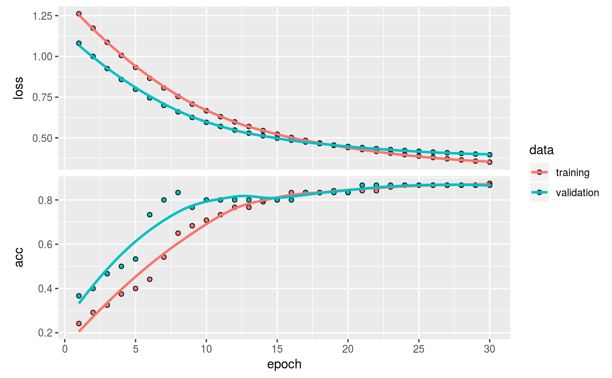

kerasgenerator package is shipped with some data generator functions, which are designed to make the data generation process for keras models easier.
Getting Started
Installation
The package is in early development stage and currently only available via GitHub. You can install the development version using install_github():
Compatibility
Most of kerasgenerator functionalities are using dplyr and recipes interface to make data preparation process easier. Note that you must import kerasgenerator after keras library imported to make the package works properly:
Designing a generator
Let’s make a quick example using iris dataset. For a simple model that use cross-sectional data, you can start by using data_generator() to convert the data into pre-compiled generator:
# initiate a generator
gen <- create_generator(
data = iris,
batch_size = 32,
shuffle = TRUE
)
gen
#> A keras generator with:
#> - Number of arrays: 0
#> - Steps to see all data: 5 steps
#>
#> Batch [1/5] preview:
#>
#> Observations: 32
#> Variables: 5
#> $ Sepal.Length <dbl> 4.4, 4.8, 5.1, 5.0, 5.4, 4.8, 5.2, 5.4, 5.7, 4.9, 5…
#> $ Sepal.Width <dbl> 2.9, 3.4, 3.5, 3.4, 3.9, 3.4, 3.4, 3.9, 4.4, 3.0, 3…
#> $ Petal.Length <dbl> 1.4, 1.6, 1.4, 1.6, 1.7, 1.9, 1.4, 1.3, 1.5, 1.4, 1…
#> $ Petal.Width <dbl> 0.2, 0.2, 0.3, 0.4, 0.4, 0.2, 0.2, 0.4, 0.4, 0.2, 0…
#> $ Species <fct> setosa, setosa, setosa, setosa, setosa, setosa, set…The pre-compiled generator is partially-compatible with dplyr and recipes API. For example, you can create the dummy variables and do some preprocessing using recipes, and add some feature engineering using mutate:
# create a recipes
rec <- recipe(Species ~ . - Species, iris) %>%
step_mutate(
Petal.Ratio = Petal.Length / Petal.Width,
Sepal.Ratio = Sepal.Length / Sepal.Width
) %>%
step_sqrt(all_numeric()) %>%
step_center(all_numeric()) %>%
step_scale(all_numeric()) %>%
step_dummy(all_nominal(), one_hot = TRUE) %>%
prep()
# store the recipes to generator
gen %>%
inject_recipe(rec = rec)
#> A keras generator with:
#> - Number of arrays: 0
#> - Steps to see all data: 5 steps
#>
#> Batch [1/5] preview:
#>
#> Observations: 32
#> Variables: 9
#> $ Sepal.Length <dbl> -1.8397604, -1.2927438, -0.8972995, -1.027789…
#> $ Sepal.Width <dbl> -0.33117476, 0.80236422, 1.01882581, 0.802364…
#> $ Petal.Length <dbl> -1.3846249, -1.2208140, -1.3846249, -1.220814…
#> $ Petal.Width <dbl> -1.4100911, -1.4100911, -1.1618318, -0.952539…
#> $ Petal.Ratio <dbl> 1.24599300, 1.60609421, 0.28893840, -0.026949…
#> $ Sepal.Ratio <dbl> -1.0935885, -1.3943296, -1.2636138, -1.225275…
#> $ Species_setosa <dbl> 1, 1, 1, 1, 1, 1, 1, 1, 1, 1, 1, 1, 1, 1, 1, …
#> $ Species_versicolor <dbl> 0, 0, 0, 0, 0, 0, 0, 0, 0, 0, 0, 0, 0, 0, 0, …
#> $ Species_virginica <dbl> 0, 0, 0, 0, 0, 0, 0, 0, 0, 0, 0, 0, 0, 0, 0, …If you already done with data preprocessing parts, you can declare which variables you want to use as x and y using select_x and select_y:
gen %<>%
inject_recipe(rec = rec) %>%
select_x(-starts_with("Species")) %>%
select_y(starts_with("Species"))Note that I used %<>% (assign pipe) from magrittr just for efficiency.
Saving the generator after selecting the variables is very recommended, since it makes the following sample splitting process become easier:
# sample index
set.seed(1)
intrain <- sample(nrow(iris), nrow(iris) * 0.7)
# split sample using dplyr's slice
train_gen <- gen %>%
slice(intrain) %>%
build_generator()
val_gen <- gen %>%
slice(-intrain) %>%
build_generator()And now we are ready to test some functionalities in the model fitting process.
Model fitting using generator
In building Keras model, kerasgenerator provided some helpers function for defining some parameters related to the data. This is can be done from get_meta() function. For example, you can use get_meta() for getting the input_shape and output_shape:
model <- keras_model_sequential() %>%
layer_dense(
name = "dense1",
units = 16,
input_shape = get_meta(train_gen, "input_shape")
) %>%
layer_dense(
name = "dense2",
units = 8
) %>%
layer_dense(
name = "dense_output",
units = get_meta(train_gen, "output_shape"),
activation = "softmax"
)
model %>% compile(
optimizer = "adam",
metrics = "accuracy",
loss = "categorical_crossentropy"
)In addition, kerasgenerator also masking the *_generator() function from keras in order to make those functions know the generator characteristic, like the number of steps_per_epoch/steps, and by default the *_generator() will use it as default parameters unless you want to override it manually.
For example, when fitting using kerasgenerator, you just need to pass the generator(s) and it will automatically recognize the generator(s):
history <- model %>% fit_generator(
generator = train_gen,
validation_data = val_gen,
epochs = 30
)
plot(history)
Note that predict_generator also provided label option to specify whether the prediction output should be tidied. The default value for this option is set to TRUE:
model %>% evaluate_generator(val_gen)
#> $loss
#> [1] 0.4536896
#>
#> $acc
#> [1] 0.8222222
model %>% predict_generator(val_gen)
#> # A tibble: 45 x 4
#> setosa versicolor virginica label
#> <dbl> <dbl> <dbl> <fct>
#> 1 0.776 0.168 0.0554 setosa
#> 2 0.858 0.117 0.0250 setosa
#> 3 0.0190 0.496 0.485 setosa
#> 4 0.0619 0.624 0.314 setosa
#> 5 0.935 0.0291 0.0356 setosa
#> 6 0.305 0.333 0.363 setosa
#> 7 0.0364 0.384 0.580 setosa
#> 8 0.0477 0.716 0.236 setosa
#> 9 0.0771 0.323 0.600 setosa
#> 10 0.954 0.0317 0.0144 setosa
#> # … with 35 more rows